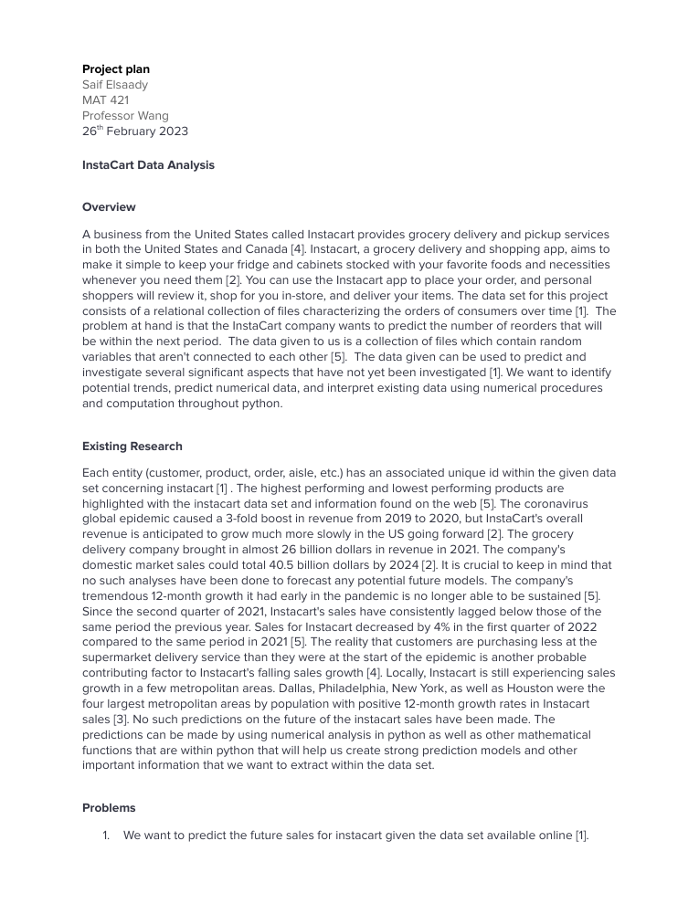

Numerical methods applied to Instacart grocery order data in Python

A MAT 421 (Applied Computational Methods) course project analyzing the Instacart Market Basket dataset with numerical and statistical methods in Python. Delivered as a Jupyter notebook (exported to HTML) plus a written project plan, it cleans and merges the relational order files, builds linear regression models relating reorders to products, and inspects model assumptions through residual and distribution diagnostics. A symbolic differentiation step is used to analyze the rate of change of a published prediction equation.
The notebook works through four stated problems: data preparation/visualization, linear regression and linear equations, residual and distribution analysis, and differentiation/optimization. It uses pandas to merge and reshape the relational files, statsmodels and scikit-learn for OLS regression, scipy/statsmodels for diagnostic plots, and SymPy for symbolic differentiation. Conclusions are drawn from the regression fit statistics and the diagnostic graphics.
The OLS model relating reorders to products reached R-squared = 0.742 (slope 1.093, intercept 3.589) on the 500-user sample, indicating a strong positive linear relationship, with residual diagnostics showing a right-skewed distribution; full analysis is in docs/Elsaady_MAT421_PROJECT_1_.html.